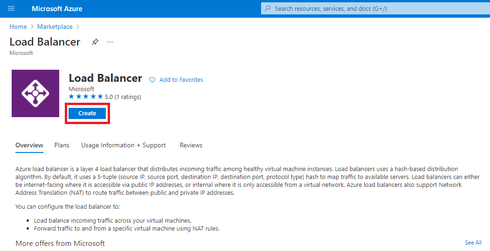
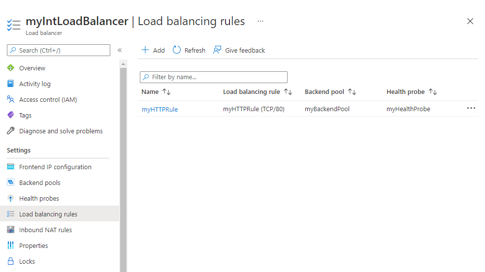
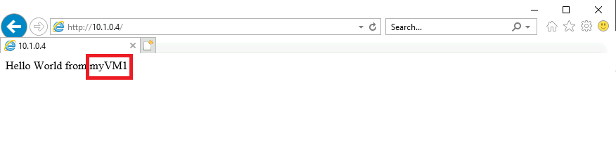

M04-Unit 4 Create and configure an Azure load balancer
In this exercise, you will create an internal load balancer for the fictional Contoso Ltd organization.
The steps to create an internal load balancer, are very similar to those you have already learned about in this module, to create a public load balancer. The key difference is that with a public load balancer the front end is accessed via a public IP address, and you test connectivity from a host which is located outside your virtual network; whereas, with an internal load balancer, the front end is a private IP address inside your virtual network, and you test connectivity from a host inside the same network.
The diagram below illustrates the environment you will be deploying in this exercise.
In this exercise, you will:
- Task 1: Create the virtual network
- Task 2: Create backend servers
- Task 3: Create the load balancer
- Task 4: Create load balancer resources
- Task 5: Test the load balancer
Task 1: Create the virtual network
In this section, you will create a virtual network and a subnet.
-
Log in to the Azure portal.
-
On the Azure portal home page, navigate to the Global Search bar and search Virtual Networks and select virtual networks under services.

-
Select Create on the Virtual networks page.

-
On the Basics tab, use the information in the table below to create the virtual network.
Setting Value Subscription Select your subscription Resource group Select Create new Name: IntLB-RG Name IntLB-VNet Region (US) East US -
Click Next : IP Addresses.
-
On the IP Addresses tab, in the IPv4 address space box, remove the default and type 10.1.0.0/16.
-
On the IP Addresses tab, select + Add subnet.
-
In the Add subnet pane, provide a subnet name of myBackendSubnet, and a subnet address range of 10.1.0.0/24.
-
Click Add.
-
Click Add subnet, provide a subnet name of myFrontEndSubnet, and a subnet address range of 10.1.2.0/24. Click Add
-
Click Next : Security.
-
Under BastionHost select Enable, then enter the information from the table below.
Setting Value Bastion name myBastionHost AzureBastionSubnet address space 10.1.1.0/24 Public IP address Select Create new Name: myBastionIP -
Click Review + create.
-
Click Create.
Task 2: Create backend servers
In this section, you will create three VMs, that will be in the same availability set, for the backend pool of the load balancer, add the VMs to the backend pool, and then install IIS on the three VMs to test the load balancer.
-
In the Azure portal, open the PowerShell session within the Cloud Shell pane.
-
In the toolbar of the Cloud Shell pane, click the Upload/Download files icon, in the drop-down menu, click Upload and upload the following files azuredeploy.json, azuredeploy.parameters.vm1.json, azuredeploy.parameters.vm2.json and azuredeploy.parameters.vm3.json into the Cloud Shell home directory.
-
Deploy the following ARM templates to create the virtual network, subnets, and VMs needed for this exercise:
code$RGName = "IntLB-RG" New-AzResourceGroupDeployment -ResourceGroupName $RGName -TemplateFile azuredeploy.json -TemplateParameterFile azuredeploy.parameters.vm1.json New-AzResourceGroupDeployment -ResourceGroupName $RGName -TemplateFile azuredeploy.json -TemplateParameterFile azuredeploy.parameters.vm2.json New-AzResourceGroupDeployment -ResourceGroupName $RGName -TemplateFile azuredeploy.json -TemplateParameterFile azuredeploy.parameters.vm3.json
Task 3: Create the load balancer
In this section, you will create an internal Standard SKU load balancer. The reason we are creating a Standard SKU load balancer here in the exercise, instead of a Basic SKU load balance, is for later exercises that require a Standard SKU version of the load balancer.
-
On the Azure portal home page, click Create a resource.
-
In the search box at the top of the page, type Load Balancer, then press Enter (Note: do not select one from the list).
-
On the results page, locate and select Load Balancer (the one that says ‘Microsoft’ and ‘Azure Service’ under the name).
-
Click Create. 
-
On the Basics tab, use the information in the table below to create the load balancer.
Setting Value Subscription Select your subscription Resource group IntLB-RG Name myIntLoadBalancer Region (US) East US Type Internal SKU Standard - Click Next: Frontend IP configurations.
- Click Add a frontend IP
-
On the Add frontend IP address blade, enter the information from the table below.
Setting Value Name LoadBalancerFrontEnd Virtual network IntLB-VNet Subnet myFrontEndSubnet Assignment Dynamic -
Click Review + create.
- Click Create.
Task 4: Create load balancer resources
In this section, you will configure load balancer settings for a backend address pool, then create a health probe and a load balancer rule.
Create a backend pool and add VMs to the backend pool
The backend address pool contains the IP addresses of the virtual NICs connected to the load balancer.
-
On the Azure portal home page, click All resources, then click on myIntLoadBalancer from the resources list.
-
Under Settings, select Backend pools, and then click Add.
-
On the Add backend pool page, enter the information from the table below.
Setting Value Name myBackendPool Virtual network IntLB-VNet -
Under Virtual machines, click Add.
-
Select the checkboxes for all 3 VMs (myVM1, myVM2, and myVM3), then click Add.
-
Click Add.

Create a health probe
The load balancer monitors the status of your app with a health probe. The health probe adds or removes VMs from the load balancer based on their response to health checks. Here you will create a health probe to monitor the health of the VMs.
-
Under Settings, click Health probes, then click Add.
-
On the Add health probe page, enter the information from the table below.
Setting Value Name myHealthProbe Protocol HTTP Port 80 Path / Interval 15 Unhealthy threshold 2 -
Click Add.

Create a load balancer rule
A load balancer rule is used to define how traffic is distributed to the VMs. You define the frontend IP configuration for the incoming traffic and the backend IP pool to receive the traffic. The source and destination port are defined in the rule. Here you will create a load balancer rule.
-
From the Backend pools page of your load balancer, under Settings, click Load balancing rules, then click Add.
-
On the Add load balancing rule page, enter the information from the table below.
Setting Value Name myHTTPRule IP Version IPv4 Frontend IP address LoadBalancerFrontEnd Protocol TCP Port 80 Backend port 80 Backend pool myBackendPool Health probe myHealthProbe Session persistence None Idle timeout (minutes) 15 Floating IP Disabled -
Click Add. 
Task 5: Test the load balancer
In this section, you will create a test VM, and then test the load balancer.
Create test VM
-
On the Azure portal home page, click Create a resource, then Compute, then select Virtual machine (if this resource type is not listed on the page, use the search box at the top of the page to search for it and select it).
-
On the Create a virtual machine page, on the Basics tab, use the information in the table below to create the first VM.
Setting Value Subscription Select your subscription Resource group IntLB-RG Virtual machine name myTestVM Region (US) East US Availability options No infrastructure redundancy required Image Windows Server 2019 Datacenter - Gen 1 Size Standard_DS1_v2 - 1 vcpu, 3.5 GiB memory Username TestUser Password TestPa$$w0rd! Confirm password TestPa$$w0rd! -
Click Next : Disks, then click Next : Networking.
-
On the Networking tab, use the information in the table below to configure networking settings.
Setting Value Virtual network IntLB-VNet Subnet myBackendSubnet Public IP Change to None NIC network security group Advanced Configure network security group Select the existing myNSG Place this virtual machine behind an existing load balancing solution? Off (unchecked) -
Click Review + create.
-
Click Create.
-
Wait for this last VM to be deployed before moving forward with the next task.
Connect to the test VM to test the load balancer
-
On the Azure portal home page, click All resources, then click on myIntLoadBalancer from the resources list.
-
On the Overview page, make a note of the Private IP address, or copy it to the clipboard. Note: you may need to select See more in order to see the Private IP address field.
-
Click Home, then on the Azure portal home page, click All resources, then click on the myTestVM virtual machine that you just created.
-
On the Overview page, select Connect, then Bastion.
-
Click Use Bastion.
-
In the Username box, type TestUser and in the Password box, type TestPa$$w0rd!, then click Connect.
-
The myTestVM window will open in another browser tab.
-
If a Networks pane appears, click Yes.
-
Click the Internet Explorer icon in the task bar to open the web browser.
-
Click OK on the Set up Internet Explorer 11 dialog box.
-
Enter (or paste) the Private IP address (e.g. 10.1.0.4) from the previous step into the address bar of the browser and press Enter.
-
The default web home page of the IIS Web server is displayed in the browser window. One of the three virtual machines in the backend pool will respond. 
-
If you click the refresh button in the browser a few times, you will see that the response comes randomly from the different VMs in the backend pool of the internal load balancer.

Clean up resources
Note: Remember to remove any newly created Azure resources that you no longer use. Removing unused resources ensures you will not see unexpected charges.
-
In the Azure portal, open the PowerShell session within the Cloud Shell pane.
-
Delete all resource groups you created throughout the labs of this module by running the following command:
codeRemove-AzResourceGroup -Name 'IntLB-RG' -Force -AsJobNote: The command executes asynchronously (as determined by the -AsJob parameter), so while you will be able to run another PowerShell command immediately afterwards within the same PowerShell session, it will take a few minutes before the resource groups are actually removed.